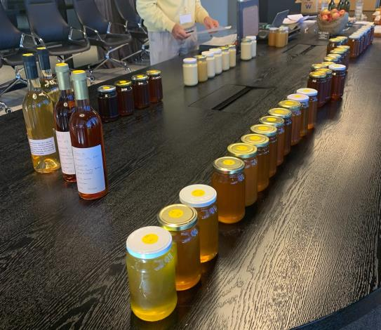
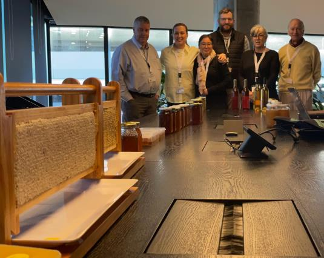

When I was asked to judge at this year's VAA Conference Honey Competition, I felt a mix of excitement and nerves. As a hobbyist beekeeper of a few years, I'm still very much on a learning journey, and stepping into the role of judge felt like a big leap into the unknown. Some months earlier, in December 2025, I had attended Honey Sensory Analysis Training in Dubai, facilitated by Raffaele and Gian Luigi from the National Register of Experts in Sensory Analysis of Honey based in Italy. Combining theory with hands-on tasting sessions, the training was a deeply humbling experience — I quickly realised just how much I didn't know. It was that sense of wonder, and that humility, that I carried into the judging room.
A Full Sensory Experience
The VAA Conference Honey Competition drew entries across multiple categories: liquid, creamed, crystallised, comb honey and mead, and judging each demanded far more than I expected. From the moment we began, I was examining the clarity of honeys held up to the light, inhaling subtle floral aromas, and paying close attention to texture and mouth-feel. The vocabulary used by the experienced head judge as well as my fellow associate judges was equally revelatory; a rich, precise language describing not just flavour, but aroma, viscosity and finish. Absorbing that language was an education in itself.
What I Didn't Expect to Learn
The biggest revelation? Presentation and clarity matter just as much as taste. A show entry is the complete package: the jar, the colour, the absence of impurities, the consistency of fill. And sitting surrounded by rows of entries, I found myself reflecting on all the work behind each one: the beekeeper, the bees, the season, the flowers. Approaching each entry with that awareness made the judging feel meaningful rather than mechanical.
Have a Go — Your Honey Deserves to Be Seen
Sitting on the judging side of the table gave me a whole new perspective on entering competitions, and my message to every beekeeper in our branch is this: give it a crack. Whether it's your local show, a VAA branch competition, or even an international honey competition, your honey is worth entering. You don't need to be a seasoned exhibitor or have a ribbon on the wall. Every jar tells a story of your hives, your season, and your bees, and that story deserves to be shared.
The Judging Team
Entering a competition is one of the best ways to learn. You'll get feedback that sharpens your eye for quality, discover aspects of your honey you'd never noticed, and connect with a community of passionate beekeepers who share your love of the craft. The standard of entries at the VAA Conference was genuinely inspiring — and every one of those exhibitors started somewhere. So have a go. You might just surprise yourself.
If you ever get the chance to judge honey — take it. Absolutely, without hesitation. You'll taste honey differently forever.

